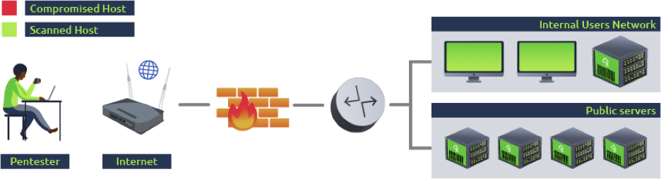
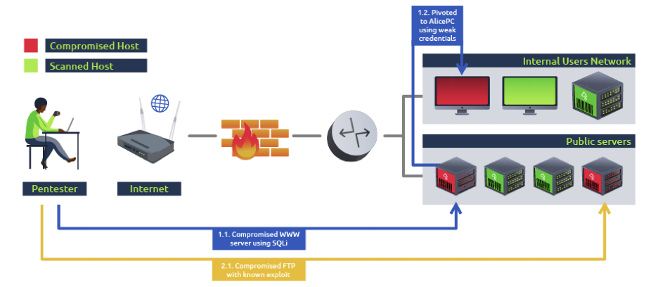
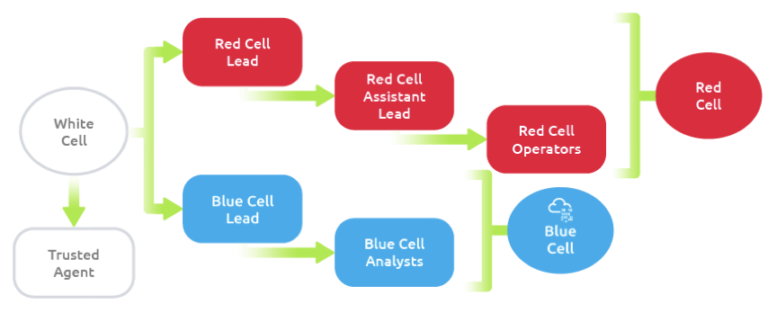
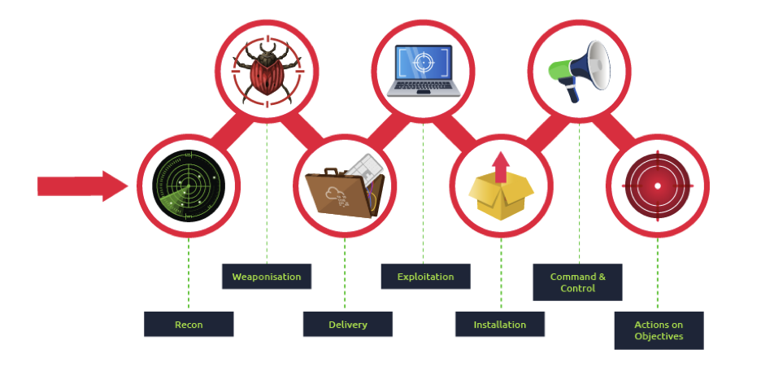

<div class="container ">
    <div class="parent-margin">

        <div class="accordion accordion-flush" id="accordionFlushExample">

            <div class="accordion-item">
                <h2 class="accordion-header" id="flush-headingOne">
                    <button class="accordion-button collapsed" type="button" data-bs-toggle="collapse"
                        data-bs-target="#flush-collapseOne" aria-expanded="false" aria-controls="flush-collapseOne">
                        Introduction:
                    </button>
                </h2>
                <div id="flush-collapseOne" class="accordion-collapse collapse" aria-labelledby="flush-headingOne"
                    data-bs-parent="#accordionFlushExample">
                    <div class="accordion-body">
                        In the world of computers, there's a constant game between the good guys and the bad guys. Just
                        like in a game of tag, the bad guys try to find ways to break into computer systems, and the
                        good guys work hard to stop them. As the bad guys come up with new tricks, the good guys have to
                        come up with new ways to protect against them.
                        Sometimes, we use tests to check if our computers are safe from the bad guys. These tests are
                        like quizzes for our computers. They help us find weaknesses in our defenses. But sometimes,
                        these tests don't show us everything the bad guys could do. So they might not be enough to
                        prepare us for a real attack from someone who's really determined to break in.
                    </div>
                </div>
            </div>

            <div class="accordion-item">
                <h2 class="accordion-header" id="flush-headingTwo">
                    <button class="accordion-button collapsed" type="button" data-bs-toggle="collapse"
                        data-bs-target="#flush-collapseTwo" aria-expanded="false" aria-controls="flush-collapseTwo">
                        Vulnerability assessments
                    </button>
                </h2>
                <div id="flush-collapseTwo" class="accordion-collapse collapse" aria-labelledby="flush-headingTwo"
                    data-bs-parent="#accordionFlushExample">
                    <div class="accordion-body">This is the simplest form of security assessment, and its main objective
                        is to identify as much vulnerability in as many systems in the network as possible. To this end,
                        concessions may be made to meet this goal effectively. For example, the attacker's machine may
                        be allowed listed on the available security solutions to avoid interfering with the
                        vulnerability discovery process. This makes sense since the objective is to look at every host
                        on the network and evaluate its security posture individually while providing the most
                        information to the company about where to focus its remediation efforts.
                        In simple words, a vulnerability check looks at each computer by itself to find problems. This
                        helps us figure out what needs fixing first to keep our network safe from bad guys. We mostly
                        use tools that do this automatically, so anyone can do it without needing to know a lot about
                        computers..</div>
                    
                </div>
            </div>

            <div class="accordion-item">
                <h2 class="accordion-header" id="flush-headingThree">
                    <button class="accordion-button collapsed" type="button" data-bs-toggle="collapse"
                        data-bs-target="#flush-collapseThree" aria-expanded="false" aria-controls="flush-collapseThree">
                        Penetration Testing:
                    </button>
                </h2>
                <div id="flush-collapseThree" class="accordion-collapse collapse" aria-labelledby="flush-headingThree"
                    data-bs-parent="#accordionFlushExample">
                    <div class="accordion-body">On top of scanning every single host for vulnerabilities, we often need
                        to understand how they impact our network as a whole. Penetration tests add to vulnerability
                        assessments by allowing the pentester to explore the impact of an attacker on the overall
                        network by doing additional steps that include:
                        Trying to take advantage of the weaknesses found on each system is crucial. Sometimes, a
                        weakness might be there, but other protections stop it from being used by bad actors. This also
                        helps us check if we can use the found weaknesses to get into a particular computer.
                        After breaking into a computer, we do more tasks to see if we can get any useful information
                        from it or if we can use it to get into other computers that we couldn't reach before.
                        Penetration tests might start by scanning for vulnerabilities just as a regular vulnerability
                        assessment but provide further information on how an attacker can chain vulnerabilities to
                        achieve specific goals. While its focus remains on identifying vulnerabilities and establishing
                        measures to protect the network, it also considers the network as a whole ecosystem and how an
                        attacker could profit from interactions between its components.
                        By analyzing how an attacker could move around our network, we also gain a basic insight on
                        possible security measure bypasses and our ability to detect a real threat actor to a certain
                        extent, limited because the scope of a penetration test is usually extensive and Penetration
                        testers don't care much about being loud or generating lots of alerts on security devices since
                        time constraints on such projects often requires us to check the network in a short time..</div>
                    
                </div>

            </div>

            <!-- Repeat for items 4-7 -->

            <div class="accordion-item">
                <h2 class="accordion-header" id="flush-headingFour">
                    <button class="accordion-button collapsed" type="button" data-bs-toggle="collapse"
                        data-bs-target="#flush-collapseFour" aria-expanded="false" aria-controls="flush-collapseFour">
                        Advanced Persistent Threats and why Regular Pentesting is not enough:
                    </button>
                </h2>
                <div id="flush-collapseFour" class="accordion-collapse collapse" aria-labelledby="flush-headingFour"
                    data-bs-parent="#accordionFlushExample">
                    <div class="accordion-body">Even though the usual security methods we talked about help find many
                        technical weaknesses, they still have some limits in fully getting a company ready to face a
                        real attacker. These limits include:
                        <ul>
                            <li>Time constraints</li>
                            <li> Budget</li>
                            <li> Limited scope/li>
                            <li> Non- disruptive</li>
                            <li>Heavy IT focus</li>
                        </ul>
                        <ul>
                            <b>Some aspects of penetration test might significantly differ from a real attack like;</b>

                            <li> Penetration tests are loud: Pentesters don't try to stay quiet like real attackers do.
                                They're
                                okay with being easily spotted because their job is to find as many problems as they can
                                in as
                                many computers as possible.

                            </li>
                            <li> Non-Technical attack vectors might be overlooked: Things like tricking people or
                                sneaking into
                                buildings aren't usually checked in these tests.
                            </li>
                            <li>
                                Relaxing of security mechanism: When doing a regular test, some safety measures might
                                get turned
                                off temporarily to make it easier for the testers. This might seem strange, but testers
                                don't
                                have a lot of time to look around. So, it's better to focus on finding big problems
                                instead of
                                trying to get around all the safety stuff.</li>


                            On the other hand, real attackers don't play fair and can do whatever they want. The
                            scariest
                            ones are called Advanced Persistent Threats (APTs). They're really good at what they do and
                            can
                            stay hidden in a network for a long time without anyone noticing. They mostly target
                            important
                            places like banks, government offices, and big companies.

                        </ul>


                    </div>
                </div>
            </div>

            <div class="accordion-item">
                <h2 class="accordion-header" id="flush-headingFive">
                    <button class="accordion-button collapsed" type="button" data-bs-toggle="collapse"
                        data-bs-target="#flush-collapseFive" aria-expanded="false" aria-controls="flush-collapseFive">
                        Red team Engagements:
                    </button>
                </h2>
                <div id="flush-collapseFive" class="accordion-collapse collapse" aria-labelledby="flush-headingFive"
                    data-bs-parent="#accordionFlushExample">
                    <div class="accordion-body">Red team engagements are like a game where we pretend to be the bad guys
                        and try to break into our own systems. This helps us see how well our defenders can catch us and
                        stop us. They don't replace regular tests but work together with them to focus more on catching
                        and stopping attacks instead of just preventing them
                        Red teaming is a term borrowed from the military. In military exercises, a group would take the
                        role of a red team to simulate attack techniques to test the reaction capabilities of a
                        defending team, generally known as blue team, against known adversary strategies. Translated
                        into the world of cybersecurity, red team engagements consist of emulating a real threat actor's
                        <b>Tactics, Techniques and Procedures (TTPs)</b> so that we can measure how well our blue team
                        responds
                        to them and ultimately improve any security controls in place.
                        Every red team engagement will start by defining clear goals, often referenced as crown jewels
                        or flags, ranging from compromising a given critical host to stealing some sensitive information
                        from the target. Usually, the blue team won't be informed of such exercises to avoid introducing
                        any biases in their analysis. The red team will do everything they can to achieve the goals
                        while remaining undetected and evading any existing security mechanisms like firewalls,
                        antivirus, EDR, IPS and others. Notice how on a red team engagement, not all of the hosts on a
                        network will be checked for vulnerabilities. A real attacker would only need to find a single
                        path to its goal and is not interested in performing noisy scans that the blue team could
                        detect.
                        Red team engagements also improve on regular penetration tests by considering several attack
                        surfaces:
                        <li> <b>Technical Infrastructure:</b> </li>
                        Like in a regular penetration test, a red team will try to uncover
                        technical vulnerabilities, with a much higher emphasis on stealth and evasion.
                        <li> <b>Social Engineering:</b></li> Targeting people through phishing campaigns, phone calls or
                        social
                        media to
                        trick them into revealing information that should be private.
                        <li> <b>Physical Intrusion:</b> </li> Using techniques like lockpicking, RFID cloning,
                        exploiting
                        weaknesses in
                        electronic access control devices to access restricted areas of facilities.
                    </div>
                </div>
            </div>

            <div class="accordion-item">
                <h2 class="accordion-header" id="flush-headingSix">
                    <button class="accordion-button collapsed" type="button" data-bs-toggle="collapse"
                        data-bs-target="#flush-collapseSix" aria-expanded="false" aria-controls="flush-collapseSix">
                        Teams and Functions of an engagments:
                    </button>
                </h2>
                <div id="flush-collapseSix" class="accordion-collapse collapse" aria-labelledby="flush-headingSix"
                    data-bs-parent="#accordionFlushExample">
                    <div class="accordion-body">
                        In a red team engagement, different people and factors come into play. Each person might have
                        their own way of thinking and working, but generally, the engagement can be divided into three
                        teams or groups. Here's a quick overview of each team and what they do:
                        <ul>
                            <li><b> Red cell:</b></li>
                            A red cell forms the offensive part of a red team engagement, simulating how a target would
                            react both strategically and tactically.

                            <li><b>Blue cell:</b></li>
                            The blue cell is the counterpart to the red team. It consists of all the elements defending
                            a target network. The blue cell usually includes blue team members, defenders, internal
                            staff, and an organization's management.

                            <li><b>White cell:</b></li>
                            The referee oversees red and blue cell activities, controls the
                            network, ensures Rule of Engagement(ROE) compliance,coordinate
                            tasks, correlates actions, and maintains impartiality.
                        </ul>
                    </div>
                    

                    <span> Below is a table outlining the roles and responsibilities of members of the red team.</span>
                    <table class="table table-striped">
                        <tbody class="table-hover">
                            <tr>
                                <th>Role</th>
                                <th>Purpose</th>
                            </tr>
                            <tr>
                                <td>Red team lead</td>
                                <td>Plans and organises engagements at a high level—delegates, assistant lead, and
                                    operators engagement assignments.</td>
                            </tr>
                            <tr>
                                <td>Red team assistant lead</td>
                                <td>Plans and organises engagements at a high level—delegates, assistant lead, and
                                    operators engagement assignments.</td>
                            </tr>
                            <tr>
                                <td>Red team operator</td>
                                <td>Executes assignments delegated by team leads. Interpret and analyse engagement plans
                                    from team leads.
                                </td>
                            </tr>
                        </tbody>
                    </table>

                </div>
            </div>

            <div class="accordion-item">
                <h2 class="accordion-header" id="flush-headingSeven">
                    <button class="accordion-button collapsed" type="button" data-bs-toggle="collapse"
                        data-bs-target="#flush-collapseSeven" aria-expanded="false" aria-controls="flush-collapseSeven">
                        Engagement Structure:
                    </button>
                </h2>
                <div id="flush-collapseSeven" class="accordion-collapse collapse" aria-labelledby="flush-headingSeven"
                    data-bs-parent="#accordionFlushExample">
                    <div class="accordion-body">
                        A core function of the red team is adversary emulation. While not mandatory, it is
                        commonly used to assess what a real adversary would do in an environment using their
                        tools and methodologies. The red team can use various cyber kill chains to summarize
                        and assess the steps and procedures of an engagement.
                        The blue team commonly uses cyber kill chains to map behaviors and break down an
                        adversaries movement. The red team can adapt this idea to map adversary TTPs
                        (Tactics, Techniques, and Procedures) to components of an engagement.
                        Many regulation and standardization bodies have released their cyber kill chain.
                        Each kill chain follows roughly the same structure, with some going more in-depth or
                        defining objectives differently. Below is a small list of standard cyber kill
                        chains.
                        <li>Lockheed Martin Cyber Kill Chain</li>
                        <li>Unified Kill Chain</li>
                        <li>Varonis Cyber Kill Chain</li>
                        <li>Active Directory Attack Cycle</li>
                        <li>MITRE ATT&CK Framework</li>
                        <span>In this room, we will commonly reference the "Lockheed Martin Cyber Kill Chain." It is a
                            more standardized kill chain than others and is very commonly used among red and blue teams.
                            The Lockheed Martin kill chain focuses on a perimeter or external breach. Unlike other kill
                            chains, it does not provide an in-depth breakdown of internal movement.You can think of this
                            kill chain as a summary of all behaviors and operations present.</span>
                        
                        <table class="table table-striped">
                            <tbody class="table-hover">
                                <tr>
                                    <th>Role</th>
                                    <th>Purpose</th>
                                    <th>Example</th>
                                </tr>
                                <tr>
                                    <td>Reconnaissance</td>
                                    <td>Obtain information on the target</td>
                                    <td>Harvesting Emails ,OSINT</td>
                                </tr>
                                <tr>
                                    <td>Weponization</td>
                                    <td>Combine the objective with an exploit. Commonly results in a deliverable payload.</td>
                                    <td>Exploit with backdoor,malicious office documents</td>

                                </tr>
                                <tr>
                                    <td>Delivery</td>
                                    <td>How will the weaponized function be delivered to the target
                                    </td>
                                    <td>Email, Web , USB</td>

                                </tr>
                                <tr>
                                    <td>Exploitation</td>
                                    <td>Exloids the targets system to execute code
                                    </td>
                                    <td>MS 17-010, Zero logon, etc.</td>

                                </tr>
                                <tr>
                                    <td>Installation</td>
                                    <td>Install malware and other tooling.
                                    </td>
                                    <td>Mimikatz, Rubeus,</td>

                                </tr>
                                <tr>
                                    <td>Command and control</td>
                                    <td>Control the compromised asset from a remote central controller
                                    </td>
                                    <td>Empire, Cobalt Strike</td>

                                </tr>
                                <tr>
                                    <td>Actions on objectives</td>
                                    <td>Any end objectives: ransomware, data exfiltration, etc.
                                    </td>
                                    <td>Conti, Lockbit2.0</td>

                                </tr>

                            </tbody>
                        </table>


                    </div>
                </div>
            </div>

        </div>

    </div>

</div>